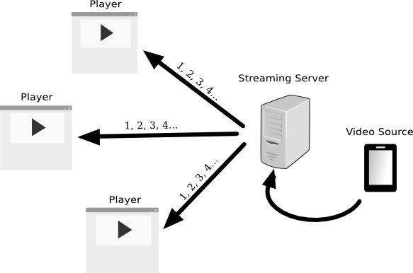
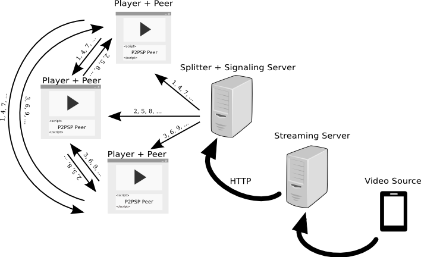
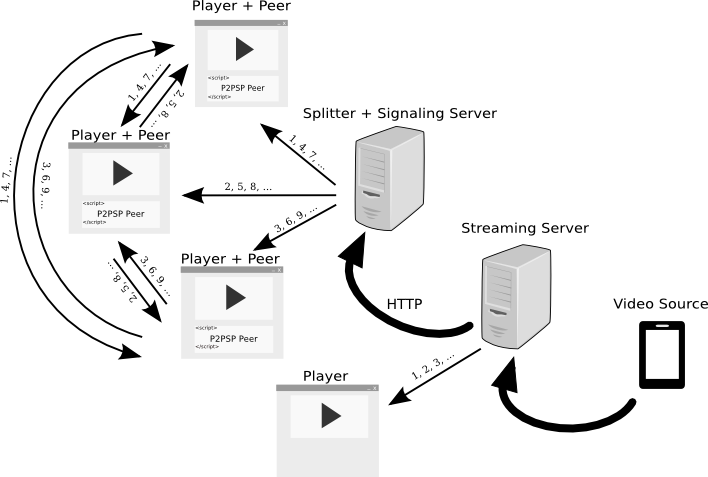
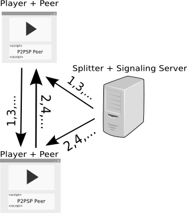
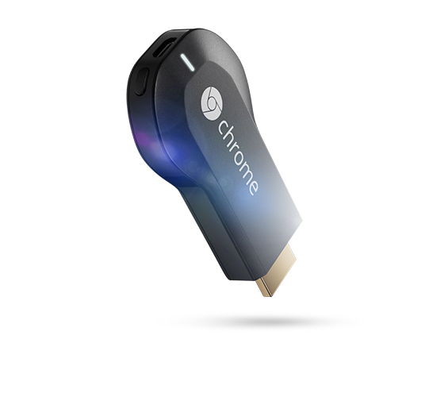
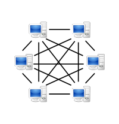

Implementación del P2PSP usando WebRTC
P2PTV directamente en el Navegador, sin plugins.

Cristóbal Medina López
Tutor: Vicente González Ruiz
Universidad de Almería
Sigue la presentación desde tu equipo
URL para seguir las diapositivas:
http://www.p2psp.org/slides/CUSL8
http://www.p2psp.org/slides/CUSL8

Motivación
Millones de personas consumen contenido multimedia diariamente
Aumento de la velocidad de acceso a Internet con tarífas reducidas
Acceso al contenido desde múltiples plataformas
El P2PSP (Peer to Peer Straightforward Protocol) es un protocolo de comunicación de la capa de aplicación para el streaming de contenido multimedia sobre Internet. El protocolo ha sido diseñado con tres ideas básicas en mente:
1. Ser tan simple como sea posible con el fin de proporcionar una implementación rápida.
2. Ser independiente del formato del stream.
3. Ser eficiente.
¿Por qué el navegador Web?
Fácil de usar: para acceder a un recurso es suficiente con recordar el nombre de dominio donde se aloja o llegar hasta él mediante motores de búsqueda disponibles en la red.

Etiqueta <video>: permite incrustar contenido multimedia directamente, sin necesidad de plugins.

WebRTC: define los recursos PeerConnection y DataChannel. Juntos, permiten establecer un canal de datos bidireccional entre los navegadores mediante socket sobre UDP.
Streaming Cliente-Servidor en la Web

Un escenario típico de streaming en vivo usando el modelo cliente-servidor. La fuente de vídeo captura el vídeo y lo envía al servidor de streaming. Cada cliente recibe una copia del stream desde el servidor de streaming quién envía el contenido tantas veces como clientes hay conectados.
Streaming P2PSP en la Web

Un escenario equivalente al anterior pero usando el P2PSP. Cabe destacar que en este caso el Streaming Server sólo envía una copia del stream. Al igual que éste, el Splitter sólo envía una copia del stream y los peer son los encargados de compartir el contenido entre ellos.
P2PSP y C-S no son incompatibles

Por ejemplo, un usuario premium (que no estaría obligado a compartir ancho de banda con el clúster) podría recibir el stream directamente del Streaming Server usando el modelo Cliente-Servidor.
Otras ventajas del P2PSP en la Web
Los usuarios sólo se descargan una página Web para empezar a disfrutar del contenido. Sin plugins o software adicional.
Los clientes aportan su capacidad de subida con el fin de hacer el sistema mucho más escalable.
Estado actual de la implementación
Veámos una demostración

Desafortunadamente, en este momento...
No existe un formato de vídeo universal aceptado por todos los navegadores Web.
La API WebRTC es sólo un borrador que algunos navegadores han empezado a implementar. Sólo disponible en Chrome y Firefox.
Media Source Extensions no está soportada por todos los navegadores. Sin embargo, está más cerca de convertirse en estándar, es una Candidate Recommendation del W3C.
Trabajo Futuro

Mantener actualizada la implementación para que sea compatible con los navegadores de acuerdo al proceso de integración de WebRTC en los mismos.

Convertir la implementación en una API de modo que cualquier desarrollador pueda incrustar fácilmente y de forma transparente un reproductor P2PSP en sus aplicaciones.

Portar el sistema a Google Chromecast para conseguir ejecutar un peer directamente en el televisor.
En Resumen

Las redes P2P son una alternativa al tradicional cliente-servidor para el streaming de contenido en directo.
Aunque deben realizarse algunas mejoras, la Web ofrece (o lo hará en breve) la funcionalidad suficiente para desarrollar sistemas masivos de P2PTV.
Enlaces de interés
> Web oficial del protocolo P2PSP
> P2PSP en Launchpad
> Estado de WebRTC
> Streaming entre navegadores
> Blog de Cristóbal Medina
Agradecimientos